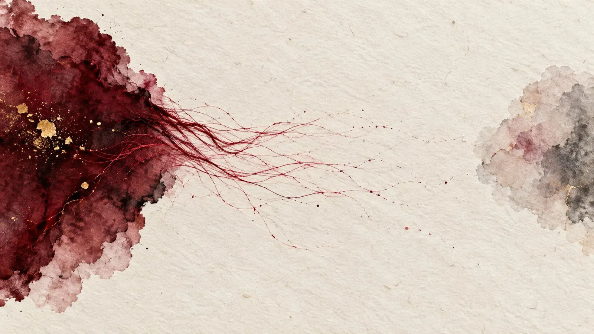
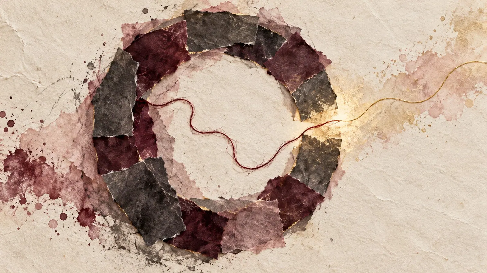
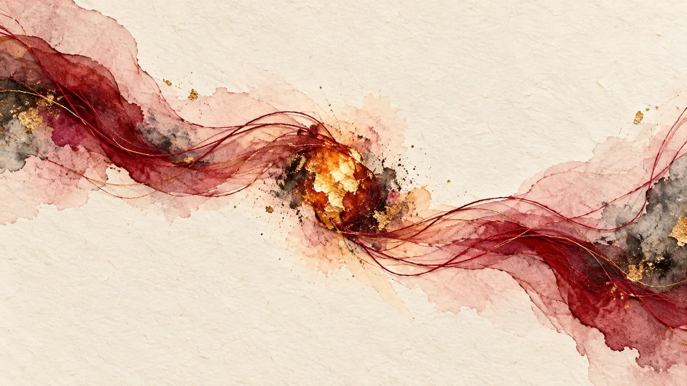

Love Isn't Cherry Picking
Seven Twelve
Seven twelve in the morning, the coffee is still too hot, the phone lies next to it. I write "Good morning, I hope you slept well" with a heart behind it. Then one more to the next. Maybe forty seconds for both, and afterwards the coffee is still too hot.
At noon I check. Nothing. Nothing in the evening either. The next day a "sorry, so much going on" arrives with a heart, and I'm happy about it, honestly. But somewhere between the second and the twentieth time, you start counting. Not the hearts. The days.
This text is about what happens when love only flows in one direction. When one person picks the cherries and the other one waters the tree. And about the sentences people hide behind while it happens. One of them comes up remarkably often: "That's just how I am."
Where I stand
I have ADHD, and very likely autism too, never properly diagnosed. My head is like four screens running five browsers with what feels like a hundred tabs each, and somewhere in between music is playing and I have no idea where from. There are weekends a hyperfocus swallows whole, and days when a single message feels like moving house. And on top of that, the urge to always get everything right.
I'm not telling you this to earn myself a right to speak. I'm telling you so you know where I'm looking from. Because this text isn't about ADHD, not about autism, borderline or depression, and not about any other word you can write into a file. It's about love. And about how easy it is to hide behind something when love gets hard.
Diagnoses matter. They explain a lot, and the days when nothing works are real. But an explanation is a map, not an excuse for never setting off.
What's written here is twenty years of experience. Yes, folks, I'm not twenty anymore. I don't hate any of the people I write about, I simply don't have time for that. This isn't about pointing fingers. It's about all of us, neurodivergent or typical, getting a feel for how we come across to others.
Because love lives in a loop of giving and taking. Only when both are in balance does it last. And above all, only then is it a joy.
Four stories from before
All four are older than my account here. I've changed them enough that nobody will find their own life in them. I kept the pattern, because the pattern is the whole point.
Almost Dad. The oldest story is almost eighteen years old, back when I wasn't a TGirl yet. She lived at one end of Germany, I lived at the other, and every weekend I drove the whole way. Friday there, Sunday back, a whole life in between. The Autobahn and I were very close friends back then.
She had a little daughter. I knew she had borderline, and that was okay. We had worked out strategies together, for the bad days and the storms, and they worked. I helped wherever I could, and I was there. We loved each other, and we complemented each other beautifully. We had sex, good sex, fantastic sex, whenever the little one was asleep.
At some point the little one called me "Daddy". Just like that, between two sentences, as if it were the most natural thing in the world. I cried. It was one of the most beautiful feelings I know.
Months later I waited for days for a message. Then a text arrived: "You're too good for me. I'm ending this. Don't come back." No conversation, no explanation, no goodbye. Three sentences, and suddenly the distance between north and south was exactly as long as it looks on the map.
The woman on call. She said "I love you" early, earlier than I expected, and still it didn't feel too early. It was real. I loved her too, and that matters for everything that follows: I wasn't suspicious. I was happy.
We lived our life together in one single chat, and she only had it on her computer. She never managed to get it onto her phone. For a long time I thought it was one of those tech quirks you laugh about. Only much later did I understand how convenient it is to have a place where you only exist when you want to. "I wasn't at my PC" is a very polite way of saying "I wasn't there for you".
Often she was silent for days. And when she showed up, she showed up completely: now, right now, tell me everything. I jumped, every time, because I was happy to see her. And if I couldn't jump once because of work, a soft "what a shame, I was so looking forward to it" followed. It hurt in a way I couldn't name back then. Today I'd say: I was on call, and she had the button.
Then came the chain. First lots of work, a week of nothing. Then a spontaneous holiday, and I sat in front of an empty chat for five days and worried, until a cheerful sorry arrived. A workshop. A depression, and I comforted her as well as you can comfort anyone through a screen. Two weeks later she was on top of the world again, as if nothing had happened. A layoff, a move, and four days later a new job in an industry where nobody is finding anything right now. And between the links of the chain, again and again, the days when she was suddenly there and wanted attention, immediately and completely. Then I jumped. Every time.
Each stop on its own was believable, and I believed every single one. That's the strange part. Only when I laid them side by side did I see a map where the roads didn't connect. I pulled the ripcord. Not because of one excuse. Because of the chain. And a little because I was tired of jumping.
The fireworks. For six months I was in love with a woman who was sweet and warm and a little unsure of herself, just like me. We talked like friends, and I didn't dare make it more. For six months I wrote sentences and deleted them again.
When I finally told her, the sky opened up. Fireworks, the full show, rockets and showers of sparks and the little girl in me clapping her hands because it was finally happening. For two weeks I lived on clouds.
In exactly those two weeks she had already started something with a mutual acquaintance. With a woman who, only a few days earlier, had written to tell me how happy she was for the two of us. I saw it in a bio. There it was: married. An online wedding, with the woman I had been in love with for six months.
I asked the acquaintance why. Just that, why. Deep down I already knew the answer. She had a habit of seeing people as possessions, and whoever slipped out of her grip quickly stopped being interesting. The bio wasn't a love letter. It was a flag planted on conquered land, and I was meant to see it. The fact that I asked at all was treated as an attack.
I wanted to talk to my new love. I only wanted to understand. The answer was: "You're putting too much pressure on me." And then: "I might get in touch when it feels okay for me." So I waited. And because I didn't know what to do with myself, I wrote a small post saying that I was waiting. That was an attack too. "This is too much for me now. I said I need time, and you're not respecting my boundaries."
In the end I was the one who crossed boundaries. Me, the one who had asked and waited. She never got in touch. At some point I stopped waiting, but that took longer than I like to admit.
The silence that is a choice. The fourth story is the quietest, and maybe that's why it echoes the longest. No betrayal, no chain, no big bang. Just a person who told me how much they loved me. I believed it, because it felt real.
I showed that we existed. With pictures and little texts, yes, but also with everything else that belongs to it: small gestures, holding hands where others can see, a kiss, no matter who's watching. Showing the world that you're proud to have this person by your side. What came back was a thank you. Sometimes a heart. And then I watched the same person do exactly that for someone else. Openly, in front of everyone, with everything I would have wished for. For me there were big words in a closed room. For the other person there was the whole street.
The worst images I know are couples walking one behind the other. Not side by side, not hand in hand. One in front, one behind, as if they just happened to be going the same way. Online there's the same picture, just without the pavement: people who tell you in closed chat rooms how much they love you, and out there, where everyone can read along, there's no trace of it. That's exactly how it felt.
At some point you have to ask yourself an uncomfortable question, offline as much as online: Am I someone this person truly loves? Or am I the secret affair, allowed to be loved as long as nobody's looking? An "I love you" in a closed room isn't worthless. But a love that never steps out the door never sees daylight, and things that never see daylight don't grow very well.
It didn't make me angry. It made me quiet. Because there was no question left whether the strength was there. It was. It just went to someone else. Loving someone else more is allowed, I'm the last person to argue against that. Whispering big words in my ear while showing the whole world someone else isn't.

Can't, won't, doesn't tell the truth
Four stories, four silences. And still they're not the same. It took me a while to tell them apart.
There's the can't. Days when truly nothing works. The head is full, the battery is empty, and writing a message feels like carrying a wardrobe up the stairs. That exists. I know it. It deserves patience, and without keeping score.
There's the won't. The strength is there, it just goes somewhere else. Whoever posts declarations of love for one person and never for another can do it. They just don't. That's not a diagnosis, that's a priority. Those are the cherries from the beginning.
And there's the doesn't tell the truth. The excuses contradict each other, the story changes depending on the day, and at some point you realise you're not talking to a person, you're talking to a fog. That doesn't deserve patience anymore. That deserves the ripcord.
The nasty part is: from the outside, everything looks the same. An empty inbox. And whoever has lived through the fog once hears the chain rattling faster on the next quiet day, even if it might just be a can't. That happened to me. I'm writing it down because honesty includes it.
One more time back to the won't. Priorities in themselves aren't wrong. Nobody can love everyone equally, and nobody has to. It only gets difficult when you keep them quiet. When you say "I love you" and let the other person believe they're at the top, while in truth they're sitting on the bench, warming up for a match they'll never be subbed into. Whoever loves brings it up on their own. "You matter to me, but you're not my first priority." That's a heavy sentence, and it can cost you a person. Not saying it costs the other person more: months of waiting for something that never comes.
The shield
What stayed with me most in all four stories isn't the silence itself. It's what happens when you bring it up.
"You knew I have ADHD." "You know my history." "My social battery is empty." "I'm not doing well right now." All of that can be true. But it has a side effect: suddenly you're the one who isn't being considerate. Whoever says "you never take care of me" suddenly looks like someone blaming another person for their brain or their past.
And who dares to keep talking after that? The diagnosis makes disagreement expensive. That's the trick, and it works frighteningly well, often without the person behind it playing it on purpose. The excuse doesn't protect itself. The taboo protects it.
The pattern behind it isn't even neurodivergent. It's human. People want to be loved, but preferably the easy way: everyone else should be available, while they themselves stay free. There's a name for that nobody likes to hear: using people. Neurotypicals do exactly the same, they just call it something else. They ghost. "Too many negative vibes." "This is too much for me right now." Different packaging, same content.
And then there's the most polite version of all: "You're too good for me." Sounds like a compliment. Is an emergency exit. Whoever writes that doesn't have to explain anything, endure anything or change anything, and the other person even gets to feel flattered on the way out.
It's completely fine to say: "Heads up, I'm neurodivergent, some things come across differently with me." I say that too, early and without beating around the bush. That's directions. It only becomes a shield when you stand behind it so nobody is allowed to ask anymore.
It took me a long time to find the sentence I actually wanted to say. It isn't "I don't care about your diagnosis". It's: "I care about your diagnosis. It just doesn't answer my question."

The dead end is built, not born
I wanted to know whether I was imagining all this. So I read.
Russell Barkley, probably the best-known ADHD researcher in the world, has a sentence he repeats in every book: ADHD is not your fault, but it is your responsibility. Not your fault that your head is built this way. Your responsibility what you do with it. He means ADHD, but the sentence fits every bundle we carry around.
And then I came across something that genuinely surprised me. A research team at Yale looked at what happens to people when their problems are explained to them in purely biological terms. "That's your brain, that's chemistry." The result: they feel less guilty, fine. But they also believe more strongly that nothing can be changed. With ADHD even more clearly. And that belief works backwards. Whoever is convinced nothing can change doesn't try, and then nothing changes. A self-fulfilling prophecy with a doctor's note.
And yet the brain is actually a wonderful thing. It keeps developing all the time, without us having to do anything. It wears paths into itself, patterns of thought that help us, and sadly also ones that block us. And that's exactly where you can consciously steer against it.
For a long time I couldn't look anyone in the eye when I talked to them. It just didn't work. I had to learn it, conversation by conversation, and it took time. Today I can. Not always effortlessly, but I can. It was no different with trust. I couldn't trust anyone, and I learned to. I didn't want to open up to anyone, and I learned how freeing it is to open the door just a crack after all. I carry a huge fear of loss around with me and still learned to let people in, even though I know how much it hurts to lose them. In my soul and in my body. None of that came naturally to me. I had to learn all of it.
In the end, the question is always the same: Do I want to change, to find out whether it might be more beautiful beyond the border I built myself? Or do I stay behind the wall my whole life and call it home?
The brain isn't finished at some point and then stays that way until the end, while we just collect memories like holiday photos. The operating system keeps getting updates, from everything we live through. Of course there are limits. Some abilities sit more in one half than the other, and some limitations stay. But look at people after a stroke. They lose parts of their brain, and then they learn again. The brain rewires itself. It just takes time, sometimes a very long time.
If a brain can do that after a stroke, it can manage a "good morning".
The antidote is almost ridiculously simple: when you explain to the same people that brains are malleable, that experience and practice change them, the pessimism drops again. And therapy demonstrably works, for adults with ADHD too, including the emotional side of it.
So "that's just how I am" isn't just a description. It's a sentence that makes itself true. The dead end isn't born. You build it, brick by brick, every time you say it.
So nobody gets this wrong: a hyperfocus stays a hyperfocus. You can't think hyperactivity away. Some wounds stay scars. Nobody has to rebuild their brain. But between "rebuild my brain" and "nothing at all" there's a pretty big field. Most relationships would survive on a small patch of it.
Whoever is always spared is never taken seriously
Almost every guide to ADHD, borderline or other diagnoses in relationships is written from the same direction: one person is neurodivergent, the other is supposed to be considerate. Be understanding. Don't take the silence personally. Take the pressure off.
While reading, I often asked myself: And what if both of them carry their bundle? Whose empty battery counts then? Who gets to withdraw, and who has to wait? The guides have surprisingly few answers to that.
But even when only one side is neurodivergent, something about this constant consideration bothers me. It turns people who think differently into people who need to be handled with care. Research has a sober way of putting it: biological explanations bring less rejection, but also the impression that there's hardly anything to be done. You get treated more kindly and trusted with less. And in relationships that quickly tips into a pattern where one person becomes the manager and the other feels like a child under supervision.
To me, ADHD isn't an illness. It's a different way of thinking. And thinking differently doesn't make anyone less of an adult.
Emotional exceptional situations aren't easy for anyone. Neurotypical, neurodivergent or, like most of us, somewhere in between: nobody has a special recipe for simply digesting a fight, a hurt or an uncomfortable question. That's not a question of wiring. That's a question of practice. You face the uncomfortable, you learn from it, you build yourself strategies, you rethink your own behaviour and adjust it, in small steps. That's called growing up, and it never quite stops.
Whoever is only ever spared never gets that practice. That isn't consideration. That's a very kindly wrapped "we don't think you can do it".
Nobody has it all together
We all carry something around, every one of us our very own bundle. In all the years I've been talking with people, there hasn't been a single person where I had the impression they truly had it all together. Not even the ones who looked like it at first. They were just very good at hiding it. I carry a pretty thick package of trauma around myself.
That's why it makes no difference to me whether someone has a name for their bundle, whether they're at home somewhere on the neurodivergent spectrum or have a past behind them they'd rather not talk about. Behaviour isn't set in stone. Behaviour can change.
And whoever is looking for love between people should try to put themselves in the other person's shoes and ask: Would I want to be treated like this? That isn't always easy, because the other person might think completely differently. But it's exactly what gets demanded of neurotypicals, let's lovingly call them normies, all the time. "Just put yourself in my position." Often with the follow-up: "Oh right, you can't." If we expect that of them, it applies to us too. Both ways, or not at all.

Loving also means jumping over your own shadow. Whoever loves no longer moves only inside their own comfort zone, because now there's a shared one, and you have to furnish it together. Love means understanding and compassion, on both sides. And respect, on both sides as well.
A log in the morning
I drew a consequence from all of this, and it wasn't a comfortable one. I reduced the number of people I love and take care of. Not because the others weren't worth it. But because I know where my limits are. Nobody can take care of hundreds of people at once, with or without ADHD. So rather fewer, but properly. You have to know what you're taking on. Whoever promises love to more people than they can carry ends up using someone, even if they never meant to.
I know where my weaknesses are. And because I know, I can work against some of them. Not all of them. But enough.
Whoever loves has the strength to change a little. Not to become someone else. But to make things a little easier for the person they love.
I don't ask anyone for fireworks. Fireworks are beautiful, loud and over after ten minutes, and the next morning there's only soggy cardboard in the gutter. What keeps a relationship warm is smaller. A log on the fire. A "good morning". An "I thought of you". A post that says you exist and that you matter to someone. A call, a text, maybe even an old-school letter. A hug, a kiss. Online or offline, the format doesn't matter.
The message is always the same: I see you. I feel you. You matter so much to me that, no matter how things are with me right now, I take a few seconds or minutes just for you. So that you feel safe.
And for everyone whose head forgets that, and I'm one of them: that's what alarms are for. You set it once, write the name on it, and at seven twelve it reminds you that someone is waiting. Thirty seconds. No rebuild, no hyperfocus, no heroics. Just one single decision that no brain can make for you.
Set it today. For the people you've told that you love them. 🔥
First published on X. Replies and conversation live there.